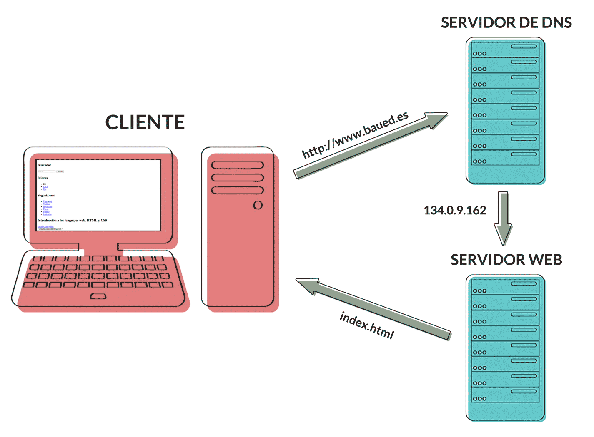
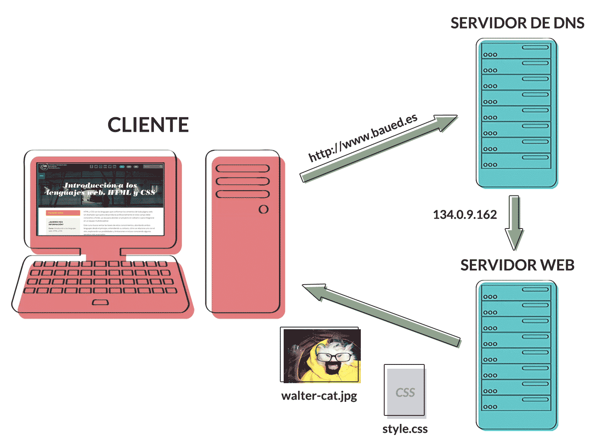

El usuario va navegando tan tranquilamente cuando...
“It’s time for us to treat performance as an essential design feature, not just as a technical best practice.”
El performance de la web no sólo afecta a la experiencia del usuario, sino también al SEO, y por supuesto al negocio.
Amazon
Aumenta sus ganancias en un 1% cada 100ms de mejora en la velocidad de descarga.
Yahoo
9% de aumento en el tráfico por cada 400ms de mejora.
Etsy
Cada 160k extra de peso en una página aumenta 12% la taza de rebote.
“80-90% of the time spent by users waiting for pages to load is spent on the frontend, all the work that needs to be done after the HTML document has arrived.”


Intentar tener un solo archivo Css. Gracias al @import Sass es sencillo creando un archivo principal que será el que se compile en css y sólo incluirá llamadas al resto de las hojas de estilo.
styles.scss => styles.css
@import 'base/normalize';
@import 'base/typography';
@import 'base/forms';
@import 'layout/grid';
@import 'layout/header';
@import 'layout/footer';
@import 'components/navigation';
@import 'components/slider';
Con el Javascript podemos hacer lo mismo que el con el Css y combinar todos los archivos en uno solo, aunque no es tan sencillo. Hay que tener en cuenta más parametros como el orden de carga, la dependencia entre unos archivos y otros o qué scripts se necesitan ejecutar en qué momento.
La técnica de sprites consiste en combinar varias imágenes en un sólo archivo y luego mediante Css mostrar únicamente la que necesitasmos.
.icon {
background-image: url(../img/sprite.png);
background-repeat: none;
width: 64px;
height: 64px;
}
.icon-fb { background-position: 0 0; }
.icon-tw { background-position: -64px 0; }
.icon-ig { background-position: -128px 0; }
Otra variante de spriting es la de incluir todas las imágenes en base 64 en una hoja de estilo asociadas a una class.
.icon {
background-position: ceter center;
background-repeat: none;
width: 32px;
height: 32px;
}
.icon-fb { background-image: url(base64:); }
.icon-tw { background-image: url(base64:); }
.icon-ig { background-image: url(base64:); }

Los archivos de texto (.html, .css, .js, etc) pueden enviarse comprimidos desde el servidor para reducir su peso durante el viaje hasta el cliente. Esta reducción suele ser muy significativa.
Lo normal seria que nuestro servicio de host tenga activada la compresión gzip pero nunca está de más comprobarlo, y en caso de que no sea así, ponernos en contacto con ellos para que la activen.
Solemos escribir nuestro Css y nuestro Javascript optimizado para su lectura, es decir, con una indentación y espaciado claro, comentarios, etc. Los ordenadores no necesitan esto para interpretarlos y es por eso que a la hora de subir un fichero al servidor podemos reducir bastante su peso si nos deshacemos de todo lo que no sea imprescindible.
Para ello existen varias herramientas. Por convención se suele diferenciar a los ficheros comprimidos con la extensión .min (Ej: styles.min.css)
Tambien podemos compilar el css comprimido directamente desde Sass.
sass style.scss:style.css --style compressed
Es recomendable comprimir lo máximo posible las imágenes antes de subirlas al servidor.
Desde Photoshop tendremos más control sobre la compresión final desde la ventana de Guardar para web (cmd + alt + shift + S) o podemos usar una herramienta externa como ImageOptim o ImageAlpha